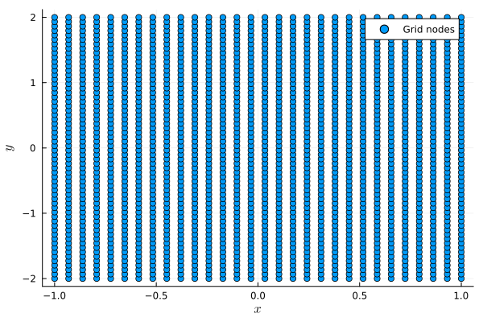
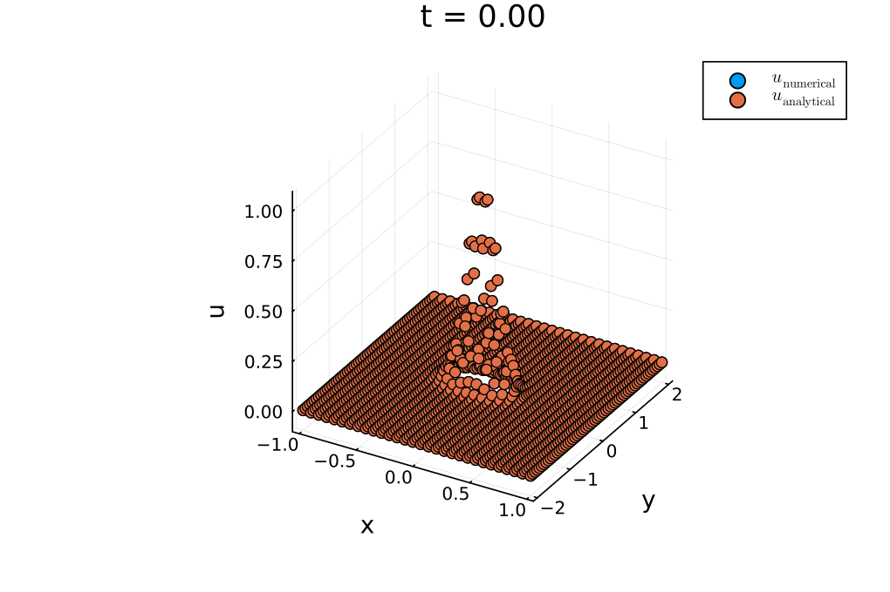

Linear advection equation in two dimensions
In this tutorial, we consider the linear advection equation in two dimensions
\[\begin{aligned} \partial_t u(t,x,y) + a_1\partial_x u(t,x,y) + a_2\partial_y u(t,x,y) &= 0, && t \in (0,T), (x, y)\in\Omega, \\ u(0,x,y) &= u_0(x,y), && (x,y) \in\Omega, \\ u(t,x,y) &= g(t,x,y), && t \in (0,T), (x,y) \in\Gamma_-. \end{aligned}\]
Here, $\Omega$ is a two-dimensional domain, and $\Gamma_- = \{(x, y)\in\partial\Omega|\boldsymbol{a}\cdot\boldsymbol{n}(\boldsymbol{x}) < 0\}$ is the inflow boundary, where $\boldsymbol{a} = [a_1, a_2]^T$ and $\boldsymbol{n}(\boldsymbol{x})$ is the outwards pointing normal vector at $\boldsymbol{x} = [x, y]^T$. We will use a rectangular domain $\Omega = [x_{\min}, x_{\max}]\times[y_{\min}, y_{\max}]$ and a tensor-product summation-by-parts operator, which is based on one-dimensional SBP operators in each direction. Based on one-dimensional SBP operators $D_1$ on $N_x$ nodes in $[x_{\min}, x_{\max}]$ and $D_2$ on $N_y$ nodes in $[y_{\min}, y_{\max}]$, we can construct a two-dimensional SBP operator $D$ on $N = N_x\cdot N_y$ nodes utilizing Kronecker products.
using SummationByPartsOperators, OrdinaryDiffEqTsit5using LaTeXStrings; using Plots: Plots, scatter, scatter!, savefigusing LinearAlgebra: norm, dot# Define the domainxmin, xmax = -1.0, 1.0ymin, ymax = -2.0, 2.0N_x, N_y = 30, 60# Construct one-dimensional SBP operatorsD_1 = derivative_operator(MattssonNordström2004(), derivative_order = 1, accuracy_order = 4, xmin = xmin, xmax = xmax, N = N_x)D_2 = derivative_operator(MattssonNordström2004(), derivative_order = 1, accuracy_order = 4, xmin = ymin, xmax = ymax, N = N_y)# Construct the two-dimensional SBP operatorD = tensor_product_operator_2D(D_1, D_2)2-dimensional tensor product operator {T=Float64} on 1800 nodesThe nodes are stored as a Vector of SVectors. We can visualize the grid as follows:
nodes = grid(D)scatter(first.(nodes), last.(nodes), label = "Grid nodes", xlabel = L"x", ylabel = L"y")savefig("two_dimensional_grid.png");"/home/runner/work/SummationByPartsOperators.jl/SummationByPartsOperators.jl/docs/build/tutorials/two_dimensional_grid.png"
A multi-dimensional SBP operators stores differentiation matrices in each direction. They can be accessed by indexing the operator:
D_x = D[1]1800×1800 SparseArrays.SparseMatrixCSC{Float64, Int64} with 6960 stored entries:
⎡⣑⢜⢮⡳⡷⡄⠀⠀⠀⠀⠀⠀⠀⠀⠀⠀⠀⠀⠀⠀⠀⠀⠀⠀⠀⠀⠀⠀⠀⠀⠀⠀⠀⠀⠀⠀⠀⠀⠀⠀⎤
⎢⢮⡳⣄⠙⢦⡰⣄⠀⠀⠀⠀⠀⠀⠀⠀⠀⠀⠀⠀⠀⠀⠀⠀⠀⠀⠀⠀⠀⠀⠀⠀⠀⠀⠀⠀⠀⠀⠀⠀⠀⎥
⎢⠙⠯⢈⡳⣄⠙⢮⡳⣄⠀⠀⠀⠀⠀⠀⠀⠀⠀⠀⠀⠀⠀⠀⠀⠀⠀⠀⠀⠀⠀⠀⠀⠀⠀⠀⠀⠀⠀⠀⠀⎥
⎢⠀⠀⠀⠙⢮⡳⣄⠙⢮⡳⣄⠀⠀⠀⠀⠀⠀⠀⠀⠀⠀⠀⠀⠀⠀⠀⠀⠀⠀⠀⠀⠀⠀⠀⠀⠀⠀⠀⠀⠀⎥
⎢⠀⠀⠀⠀⠀⠙⢮⡳⣄⠙⢮⡳⣄⠀⠀⠀⠀⠀⠀⠀⠀⠀⠀⠀⠀⠀⠀⠀⠀⠀⠀⠀⠀⠀⠀⠀⠀⠀⠀⠀⎥
⎢⠀⠀⠀⠀⠀⠀⠀⠙⢮⡳⣄⠙⢮⡳⣄⠀⠀⠀⠀⠀⠀⠀⠀⠀⠀⠀⠀⠀⠀⠀⠀⠀⠀⠀⠀⠀⠀⠀⠀⠀⎥
⎢⠀⠀⠀⠀⠀⠀⠀⠀⠀⠙⢮⡳⣄⠙⢮⡳⣄⠀⠀⠀⠀⠀⠀⠀⠀⠀⠀⠀⠀⠀⠀⠀⠀⠀⠀⠀⠀⠀⠀⠀⎥
⎢⠀⠀⠀⠀⠀⠀⠀⠀⠀⠀⠀⠙⢮⡳⣄⠙⢮⡳⣄⠀⠀⠀⠀⠀⠀⠀⠀⠀⠀⠀⠀⠀⠀⠀⠀⠀⠀⠀⠀⠀⎥
⎢⠀⠀⠀⠀⠀⠀⠀⠀⠀⠀⠀⠀⠀⠙⢮⡳⣄⠙⢮⡳⣄⠀⠀⠀⠀⠀⠀⠀⠀⠀⠀⠀⠀⠀⠀⠀⠀⠀⠀⠀⎥
⎢⠀⠀⠀⠀⠀⠀⠀⠀⠀⠀⠀⠀⠀⠀⠀⠙⢮⡳⣄⠙⢮⡳⣄⠀⠀⠀⠀⠀⠀⠀⠀⠀⠀⠀⠀⠀⠀⠀⠀⠀⎥
⎢⠀⠀⠀⠀⠀⠀⠀⠀⠀⠀⠀⠀⠀⠀⠀⠀⠀⠙⢮⡳⣄⠙⢮⡳⣄⠀⠀⠀⠀⠀⠀⠀⠀⠀⠀⠀⠀⠀⠀⠀⎥
⎢⠀⠀⠀⠀⠀⠀⠀⠀⠀⠀⠀⠀⠀⠀⠀⠀⠀⠀⠀⠙⢮⡳⣄⠙⢮⡳⣄⠀⠀⠀⠀⠀⠀⠀⠀⠀⠀⠀⠀⠀⎥
⎢⠀⠀⠀⠀⠀⠀⠀⠀⠀⠀⠀⠀⠀⠀⠀⠀⠀⠀⠀⠀⠀⠙⢮⡳⣄⠙⢮⡳⣄⠀⠀⠀⠀⠀⠀⠀⠀⠀⠀⠀⎥
⎢⠀⠀⠀⠀⠀⠀⠀⠀⠀⠀⠀⠀⠀⠀⠀⠀⠀⠀⠀⠀⠀⠀⠀⠙⢮⡳⣄⠙⢮⡳⣄⠀⠀⠀⠀⠀⠀⠀⠀⠀⎥
⎢⠀⠀⠀⠀⠀⠀⠀⠀⠀⠀⠀⠀⠀⠀⠀⠀⠀⠀⠀⠀⠀⠀⠀⠀⠀⠙⢮⡳⣄⠙⢮⡳⣄⠀⠀⠀⠀⠀⠀⠀⎥
⎢⠀⠀⠀⠀⠀⠀⠀⠀⠀⠀⠀⠀⠀⠀⠀⠀⠀⠀⠀⠀⠀⠀⠀⠀⠀⠀⠀⠙⢮⡳⣄⠙⢮⡳⣄⠀⠀⠀⠀⠀⎥
⎢⠀⠀⠀⠀⠀⠀⠀⠀⠀⠀⠀⠀⠀⠀⠀⠀⠀⠀⠀⠀⠀⠀⠀⠀⠀⠀⠀⠀⠀⠙⢮⡳⣄⠙⢮⡳⣄⠀⠀⠀⎥
⎢⠀⠀⠀⠀⠀⠀⠀⠀⠀⠀⠀⠀⠀⠀⠀⠀⠀⠀⠀⠀⠀⠀⠀⠀⠀⠀⠀⠀⠀⠀⠀⠙⢮⡳⣄⠙⢮⡁⣲⣄⎥
⎢⠀⠀⠀⠀⠀⠀⠀⠀⠀⠀⠀⠀⠀⠀⠀⠀⠀⠀⠀⠀⠀⠀⠀⠀⠀⠀⠀⠀⠀⠀⠀⠀⠀⠙⠎⠳⣄⠙⢮⡳⎥
⎣⠀⠀⠀⠀⠀⠀⠀⠀⠀⠀⠀⠀⠀⠀⠀⠀⠀⠀⠀⠀⠀⠀⠀⠀⠀⠀⠀⠀⠀⠀⠀⠀⠀⠀⠘⢾⢮⡳⡕⢍⎦D_y = D[2]1800×1800 SparseArrays.SparseMatrixCSC{Float64, Int64} with 7080 stored entries:
⎡⠻⣦⡀⠀⠀⠀⠀⠀⠀⠀⠀⠀⠀⠀⠀⠀⠀⠀⠀⠀⠀⠀⠀⠀⠀⠀⠀⠀⠀⠀⠀⠀⠀⠀⠀⠀⠀⠀⠀⠀⎤
⎢⠀⠈⠻⣦⡀⠀⠀⠀⠀⠀⠀⠀⠀⠀⠀⠀⠀⠀⠀⠀⠀⠀⠀⠀⠀⠀⠀⠀⠀⠀⠀⠀⠀⠀⠀⠀⠀⠀⠀⠀⎥
⎢⠀⠀⠀⠈⠻⢆⡀⠀⠀⠀⠀⠀⠀⠀⠀⠀⠀⠀⠀⠀⠀⠀⠀⠀⠀⠀⠀⠀⠀⠀⠀⠀⠀⠀⠀⠀⠀⠀⠀⠀⎥
⎢⠀⠀⠀⠀⠀⠈⠻⣦⡀⠀⠀⠀⠀⠀⠀⠀⠀⠀⠀⠀⠀⠀⠀⠀⠀⠀⠀⠀⠀⠀⠀⠀⠀⠀⠀⠀⠀⠀⠀⠀⎥
⎢⠀⠀⠀⠀⠀⠀⠀⠈⠻⣦⡀⠀⠀⠀⠀⠀⠀⠀⠀⠀⠀⠀⠀⠀⠀⠀⠀⠀⠀⠀⠀⠀⠀⠀⠀⠀⠀⠀⠀⠀⎥
⎢⠀⠀⠀⠀⠀⠀⠀⠀⠀⠈⠻⣦⡀⠀⠀⠀⠀⠀⠀⠀⠀⠀⠀⠀⠀⠀⠀⠀⠀⠀⠀⠀⠀⠀⠀⠀⠀⠀⠀⠀⎥
⎢⠀⠀⠀⠀⠀⠀⠀⠀⠀⠀⠀⠈⠻⣦⡀⠀⠀⠀⠀⠀⠀⠀⠀⠀⠀⠀⠀⠀⠀⠀⠀⠀⠀⠀⠀⠀⠀⠀⠀⠀⎥
⎢⠀⠀⠀⠀⠀⠀⠀⠀⠀⠀⠀⠀⠀⠈⠻⣦⡀⠀⠀⠀⠀⠀⠀⠀⠀⠀⠀⠀⠀⠀⠀⠀⠀⠀⠀⠀⠀⠀⠀⠀⎥
⎢⠀⠀⠀⠀⠀⠀⠀⠀⠀⠀⠀⠀⠀⠀⠀⠈⠻⣦⡀⠀⠀⠀⠀⠀⠀⠀⠀⠀⠀⠀⠀⠀⠀⠀⠀⠀⠀⠀⠀⠀⎥
⎢⠀⠀⠀⠀⠀⠀⠀⠀⠀⠀⠀⠀⠀⠀⠀⠀⠀⠈⠻⣦⠀⠀⠀⠀⠀⠀⠀⠀⠀⠀⠀⠀⠀⠀⠀⠀⠀⠀⠀⠀⎥
⎢⠀⠀⠀⠀⠀⠀⠀⠀⠀⠀⠀⠀⠀⠀⠀⠀⠀⠀⠀⠀⠻⣦⡀⠀⠀⠀⠀⠀⠀⠀⠀⠀⠀⠀⠀⠀⠀⠀⠀⠀⎥
⎢⠀⠀⠀⠀⠀⠀⠀⠀⠀⠀⠀⠀⠀⠀⠀⠀⠀⠀⠀⠀⠀⠈⠻⣦⡀⠀⠀⠀⠀⠀⠀⠀⠀⠀⠀⠀⠀⠀⠀⠀⎥
⎢⠀⠀⠀⠀⠀⠀⠀⠀⠀⠀⠀⠀⠀⠀⠀⠀⠀⠀⠀⠀⠀⠀⠀⠈⠻⣦⡀⠀⠀⠀⠀⠀⠀⠀⠀⠀⠀⠀⠀⠀⎥
⎢⠀⠀⠀⠀⠀⠀⠀⠀⠀⠀⠀⠀⠀⠀⠀⠀⠀⠀⠀⠀⠀⠀⠀⠀⠀⠈⠻⣦⡀⠀⠀⠀⠀⠀⠀⠀⠀⠀⠀⠀⎥
⎢⠀⠀⠀⠀⠀⠀⠀⠀⠀⠀⠀⠀⠀⠀⠀⠀⠀⠀⠀⠀⠀⠀⠀⠀⠀⠀⠀⠈⠻⣦⡀⠀⠀⠀⠀⠀⠀⠀⠀⠀⎥
⎢⠀⠀⠀⠀⠀⠀⠀⠀⠀⠀⠀⠀⠀⠀⠀⠀⠀⠀⠀⠀⠀⠀⠀⠀⠀⠀⠀⠀⠀⠈⠻⣦⡀⠀⠀⠀⠀⠀⠀⠀⎥
⎢⠀⠀⠀⠀⠀⠀⠀⠀⠀⠀⠀⠀⠀⠀⠀⠀⠀⠀⠀⠀⠀⠀⠀⠀⠀⠀⠀⠀⠀⠀⠀⠈⠻⣦⡀⠀⠀⠀⠀⠀⎥
⎢⠀⠀⠀⠀⠀⠀⠀⠀⠀⠀⠀⠀⠀⠀⠀⠀⠀⠀⠀⠀⠀⠀⠀⠀⠀⠀⠀⠀⠀⠀⠀⠀⠀⠈⠱⣦⡀⠀⠀⠀⎥
⎢⠀⠀⠀⠀⠀⠀⠀⠀⠀⠀⠀⠀⠀⠀⠀⠀⠀⠀⠀⠀⠀⠀⠀⠀⠀⠀⠀⠀⠀⠀⠀⠀⠀⠀⠀⠈⠻⣦⡀⠀⎥
⎣⠀⠀⠀⠀⠀⠀⠀⠀⠀⠀⠀⠀⠀⠀⠀⠀⠀⠀⠀⠀⠀⠀⠀⠀⠀⠀⠀⠀⠀⠀⠀⠀⠀⠀⠀⠀⠀⠈⠻⣦⎦As in the one-dimensional case, a multi-dimensional SBP operator stores the weights of a quadrature rule, which performs numerical integration in the interior of the domain. In contrast to the one-dimensional case, we also need to compute non-trivial integrals along the boundary, which means we also need to store the weights of the boundary quadrature rule. For any direction $\boldsymbol{\xi}$ ($[1, 0]^T$ for integrals in $x$-direction and $[0, 1]^T$ for integrals in $y$-direction), the boundary operator $B_{\boldsymbol{\xi}}$ approximates boundary integrals as
\[\boldsymbol{f}^T B_{\boldsymbol{\xi}} \boldsymbol{g} \approx \int_{\partial\Omega} fg(\boldsymbol{\xi}\cdot\boldsymbol{n}) ds,\]
where $f$ and $g$ are functions, $\boldsymbol{f}$ and $\boldsymbol{g}$ are their coefficients, and $\boldsymbol{n}$ is the outward-pointing normal vector at the boundary. SummationByPartsOperators.jl creates so-called mimetic boundary operators [GlaubitzKleinNordströmÖffner2023], which means that the boundary quadrature rule in a certain direction is given as a diagonal matrix with zeros on the diagonal entries corresponding to interior nodes and non-zero diagonal elements of the form $b_n = v_n(\boldsymbol{\xi}\cdot\boldsymbol{n}(\boldsymbol{x}_n))$. The operator only stores the positive weights $v_n$, but the boundary mass matrices $B_{\boldsymbol{\xi}}$ can be constructed by calling mass_matrix_boundary.
M = mass_matrix(D)B_x = mass_matrix_boundary(D, 1)B_y = mass_matrix_boundary(D, 2)1800×1800 LinearAlgebra.Diagonal{Float64, Vector{Float64}}:
-0.0244253 ⋅ ⋅ ⋅ ⋅ ⋅ … ⋅ ⋅ ⋅ ⋅ ⋅ ⋅
⋅ 0.0 ⋅ ⋅ ⋅ ⋅ ⋅ ⋅ ⋅ ⋅ ⋅ ⋅
⋅ ⋅ 0.0 ⋅ ⋅ ⋅ ⋅ ⋅ ⋅ ⋅ ⋅ ⋅
⋅ ⋅ ⋅ 0.0 ⋅ ⋅ ⋅ ⋅ ⋅ ⋅ ⋅ ⋅
⋅ ⋅ ⋅ ⋅ 0.0 ⋅ ⋅ ⋅ ⋅ ⋅ ⋅ ⋅
⋅ ⋅ ⋅ ⋅ ⋅ 0.0 … ⋅ ⋅ ⋅ ⋅ ⋅ ⋅
⋅ ⋅ ⋅ ⋅ ⋅ ⋅ ⋅ ⋅ ⋅ ⋅ ⋅ ⋅
⋅ ⋅ ⋅ ⋅ ⋅ ⋅ ⋅ ⋅ ⋅ ⋅ ⋅ ⋅
⋅ ⋅ ⋅ ⋅ ⋅ ⋅ ⋅ ⋅ ⋅ ⋅ ⋅ ⋅
⋅ ⋅ ⋅ ⋅ ⋅ ⋅ ⋅ ⋅ ⋅ ⋅ ⋅ ⋅
⋮ ⋮ ⋱ ⋮
⋅ ⋅ ⋅ ⋅ ⋅ ⋅ ⋅ ⋅ ⋅ ⋅ ⋅ ⋅
⋅ ⋅ ⋅ ⋅ ⋅ ⋅ ⋅ ⋅ ⋅ ⋅ ⋅ ⋅
⋅ ⋅ ⋅ ⋅ ⋅ ⋅ ⋅ ⋅ ⋅ ⋅ ⋅ ⋅
⋅ ⋅ ⋅ ⋅ ⋅ ⋅ 0.0 ⋅ ⋅ ⋅ ⋅ ⋅
⋅ ⋅ ⋅ ⋅ ⋅ ⋅ … ⋅ 0.0 ⋅ ⋅ ⋅ ⋅
⋅ ⋅ ⋅ ⋅ ⋅ ⋅ ⋅ ⋅ 0.0 ⋅ ⋅ ⋅
⋅ ⋅ ⋅ ⋅ ⋅ ⋅ ⋅ ⋅ ⋅ 0.0 ⋅ ⋅
⋅ ⋅ ⋅ ⋅ ⋅ ⋅ ⋅ ⋅ ⋅ ⋅ 0.0 ⋅
⋅ ⋅ ⋅ ⋅ ⋅ ⋅ ⋅ ⋅ ⋅ ⋅ ⋅ 0.0244253We can verify the SBP property of the two-dimensional operator in each direction:
check = M * D_x + D_x' * M ≈ B_xcheck || error("SBP property in x-direction is not satisfied.")truecheck = M * D_y + D_y' * M ≈ B_ycheck || error("SBP property in y-direction is not satisfied.")trueSimilar to integrate for performing integrals in the interior, we can use integrate_boundary to perform integrals along the boundary.
A semidiscretization of the 2D linear advection equation with weakly enforced boundary conditions can be written as
\[\boldsymbol{u}_t + a_1D_x\boldsymbol{u} + a_2D_y\boldsymbol{u} = M^{-1}(a_1B_x + a_2B_y)(\boldsymbol{u} - \boldsymbol{g}),\]
where the right-hand side is the simultaneous approximation term (SAT) used for the weak imposition of the boundary conditions. The vector $\boldsymbol{g}$ contains the boundary values given by the boundary condition at the inflow boundary and is set to $\boldsymbol{u}$ on the outflow boundary, i.e., for $n = 1, \ldots, N$ we have
\[g_n = \begin{cases} g(t, \boldsymbol{x}_n) & \text{if } \boldsymbol{x}\in\Gamma_-, \\ u_n & \text{otherwise}. \end{cases}\]
a = (1.0, 2.0)u0(x) = exp(-30 * norm(x .- (0.0, 0.0))^2)u(t, x) = u0(x .- a .* t)g(t, x) = u(t, x) # boundary condition from the analytical solutionu_ini = u0.(nodes)A = a[1] * D_x + a[2] * D_yB = inv(M) * (a[1] * B_x + a[2] * B_y)bc = zeros(length(nodes))p = (; a, A, B, g, D, bc)function set_bc!(bc, u, a, g, D, t) fill!(bc, zero(eltype(bc))) for (i, node) in enumerate(restrict_boundary(grid(D), D)) j = boundary_indices(D)[i] normal = normals(D)[i] if dot(normal, a) < 0 # inflow bc[j] = g(t, node) else # outflow bc[j] = u[j] end endendfunction linear_advection_2D!(du, u, p, t) a, A, B, g, D, bc = p set_bc!(bc, u, a, g, D, t) du .= -A * u + B * (u - bc)endlinear_advection_2D! (generic function with 1 method)Finally, we can set up the ODE problem and solve it using an explicit Runge-Kutta method with adaptive time stepping.
tspan = (0.0, 1.2)ode = ODEProblem(linear_advection_2D!, u_ini, tspan, p)saveat = range(tspan..., length = 100)sol = solve(ode, Tsit5(); saveat)using Printf; using Plots: @animate, gifanim = @animate for i in eachindex(sol.u) t = sol.t[i] scatter(first.(nodes), last.(nodes), sol.u[i], label = L"u_\mathrm{numerical}") scatter!(first.(nodes), last.(nodes), u.(Ref(t), nodes), label = L"u_\mathrm{analytical}", xlabel = "x", ylabel = "y", zlabel = "u", title = @sprintf("t = %.2f", t), zrange = (-0.1, 1.1), legend = :topright, dpi = 170)endgif(anim, "example_linear_advection_2D.gif");
Package versions
These results were obtained using the following versions.
using InteractiveUtilsversioninfo()using PkgPkg.status(["SummationByPartsOperators", "OrdinaryDiffEqTsit5"], mode=PKGMODE_MANIFEST)Julia Version 1.10.11
Commit a2b11907d7b (2026-03-09 14:59 UTC)
Build Info:
Official https://julialang.org/ release
Platform Info:
OS: Linux (x86_64-linux-gnu)
CPU: 4 × AMD EPYC 7763 64-Core Processor
WORD_SIZE: 64
LIBM: libopenlibm
LLVM: libLLVM-15.0.7 (ORCJIT, znver3)
Threads: 2 default, 0 interactive, 1 GC (on 4 virtual cores)
Environment:
JULIA_PKG_SERVER_REGISTRY_PREFERENCE = eager
Status `~/work/SummationByPartsOperators.jl/SummationByPartsOperators.jl/docs/Manifest.toml`
[b1df2697] OrdinaryDiffEqTsit5 v2.1.2
[9f78cca6] SummationByPartsOperators v0.5.97-DEV `~/work/SummationByPartsOperators.jl/SummationByPartsOperators.jl`- GlaubitzKleinNordströmÖffner2023Jan Glaubitz, Simon-Christian Klein, Jan Nordström, Philipp Öffner (2023): Multi-dimensional summation-by-parts operators for general function spaces: Theory and construction, Journal of Computational Physics 491, 112370, DOI: 10.1016/j.jcp.2023.112370.